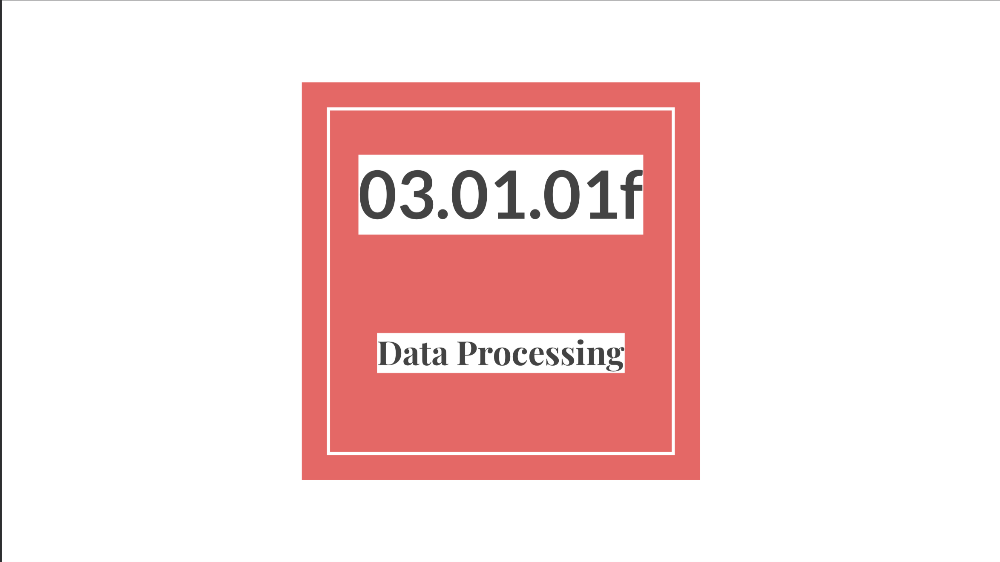
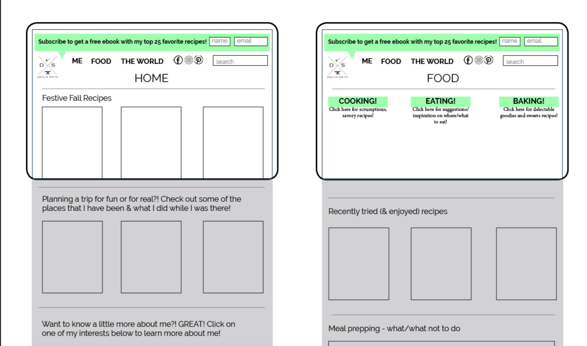
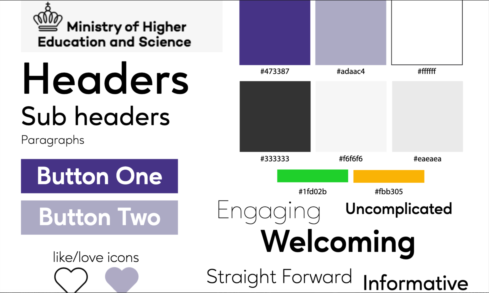
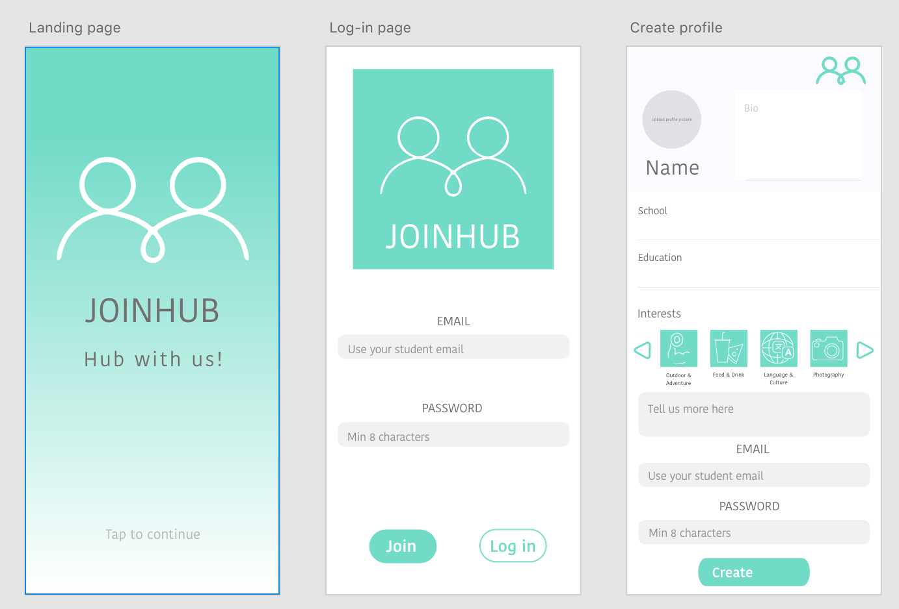

 In this project we were to do different types of research; desktop, observational, interview, and survey. Three of the research styles were done as individuals and the other one, survey, was done in a group. I had previously done some desktop, interview, and survey research in college, but I have not done much of the analysis. That was something new to me, analyzing the research and then putting it in to a presentation. I was given the feedback that I needed to make the information more presentable in future iterations. There were too many words on the slides, and I need to make it more digestible.
To see my data collection documentation - Click here In this project we found pairs and were asked to interview each other. We were to create content for a mobile website, that would match the needs of our partner and come from a specific sender – in this case, a food blog. We did card sorting and concept mapping. We did some more wireflows and learned about micro copy. I chose to do a food blog because I enjoy cooking and my partner did as well. I found it interesting to have to write in a different tone of voice then I normally do.
See the PDF version here We were put into pairs for this assignment and we were to create a site that would help international students in Copenhagen find jobs, friends, and housing. My partner and I did desk research by looking at other sites for inspiration and things that we did not like. We started working with UX prototyping more extensively, and I found that is something that I really liked. I was in charge of creating the XD prototype for the project.
To view the PDF documentation - Click hereor
Click here to view the prototype The design sprint was by far the best week of the entire semester. We were able to work in groups and start to take on serious tasks for a larger project. I was appointed the facilitator. I enjoyed being in charge of the schedule and keeping the team on track. I was also a part of the XD prototyping and the user testing. We created an app for helping people meet up with their friends on a planned and spontaneous basis. It was an intense week, but I thought that it was the most “real world” experience we had in class.
View my Design Sprint project pageor
Directly view my Design Sprint prototype